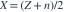

抛 n 次硬币，正面数为 X，反面数为 Y，正面概率为 p。仅记录差值  。由 Z 构造的 p 的无偏估计是？
。由 Z 构造的 p 的无偏估计是？
。由 Z 构造的 p 的无偏估计是？- A
- B
- C
- D
我已思考，展开答案与解析
正确答案：D
- 因
 ，所以 ，反解为
，所以 ，反解为 
。 - 因此所求等于样本成功比例 ，其期望为 p。
易错提醒Z 不是成功次数，它可以为负且与成功次数相差一次线性变换。
JYSG · 432精选 · 册内清华大学432·2026年·一(3)；PDF第118页（印刷页116）
原大题拆解
。由 Z 构造的 p 的无偏估计是？，所以 ，反解为 
。JYSG · 432精选 · 册内清华大学432·2026年·一(3)；PDF第118页（印刷页116）
原大题拆解